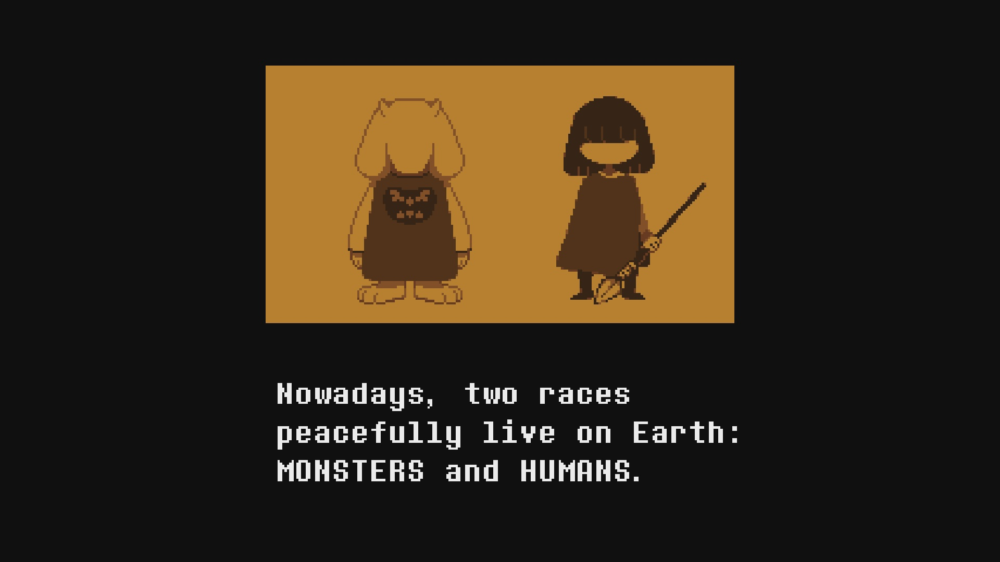
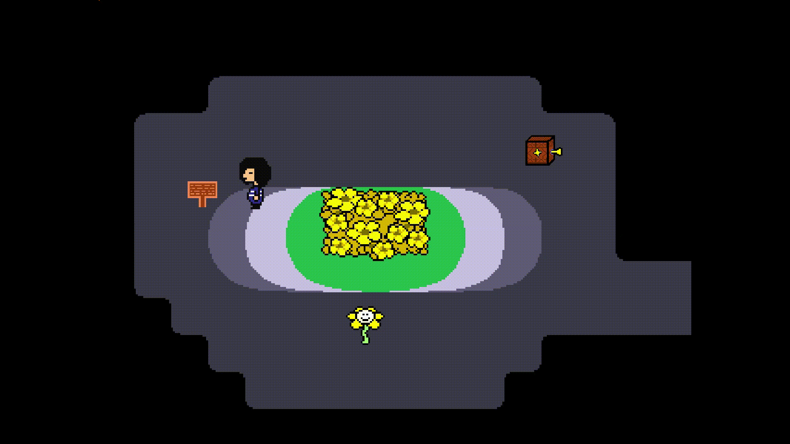
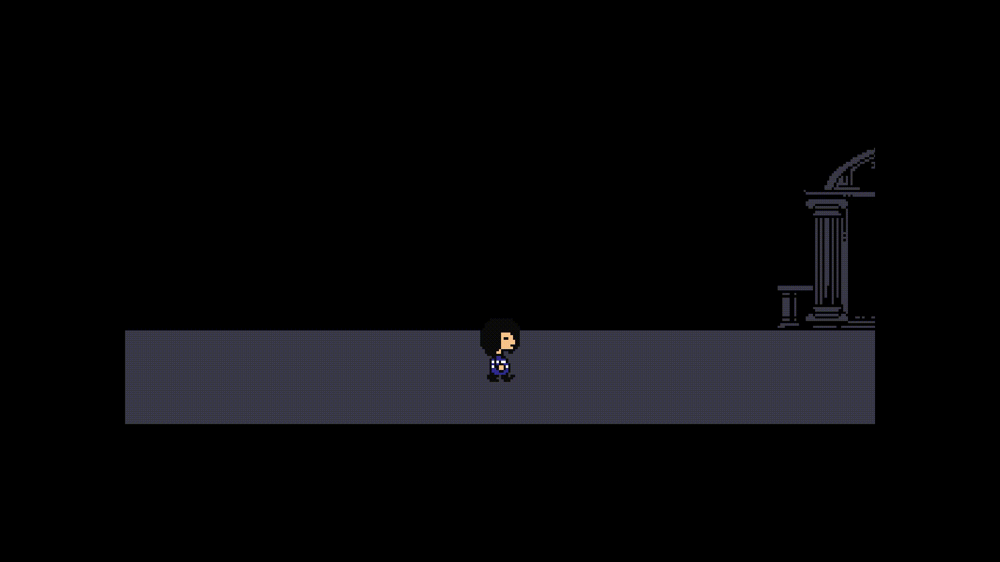

Good... uuuhhmmmmm...
I'm glad to see you on the web page dedicated to the development of my own game! Her draft title is UNDERLEGENDS: Justice and Patience. This is a fan game set in the Undertale universe - another great game that I love so much! On this page you can find out some information about my project.
About me and the game
One summer, when I was a 17-year-old going to the country and thinking about my favorite game, Undertale, I thought, "God, there are so many untold stories in this universe! It would be cool if they were told in other games. What they can be?" And after a few hours I came up with a complete story for one of these games.
Since then, 3 years have passed and all these 3 years I have been haunted by the thought that I really really want to tell the story that I came up with. But I didn't know how to make games, so I decided to start with what I can - I made music for it. I enjoyed doing it so much that in 2020 I decided to study as a programmer in order to learn how to make games and finish my dream project. But in order to finish it, I have to start it, and at this point I found myself in the summer of 2022.
I started learning the GameMaker Studio 2 engine. I decided to try to implement on my own all the mechanics that are in the original game. Once I've done that, all I have to do is put all the design and story that I came up with on this rod.
In parallel with this, I reworked and finalized the soundtrack, rewrote the plot several times. As a result, the game has grown to such a scale that it can be released in 3 chapters. Chapter 1 will be a demo version and something is already ready for it, albeit quite a bit. Why not take a look at it together?
Mini Preview ?!
Some screenshots from a test build I'm working on right now

Everyone knows that the most important thing in games is to be able to approach the tablets and read the inscriptions on them!
Sorry... The combat system is not ready yet, I only have the start animation and the combat menu, but there are no enemies yet and you have no one to fight with. Actually, I would leave it like this because violence is terrible, but if I do that, you won't be playing my game :(
